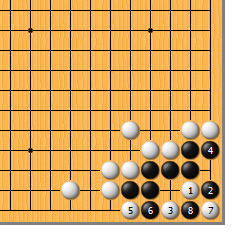
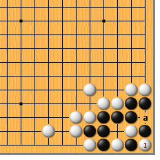
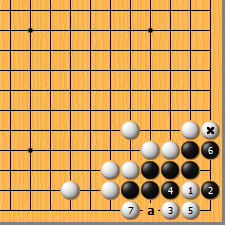
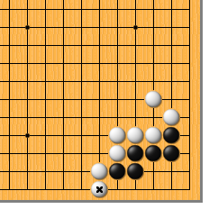
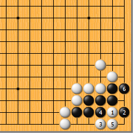

|  |  | |
| 图1 这个形状实战中很常见吧。白立一子，黑要不要补？结论是有棋，不过不很要紧。白1靠是急所，黑2扳，白3尖是手筋。黑4挡，白5至7成劫。下面我们仔细地分析一下…… | 图2 白首先要打赢1位这个劫，否则黑就活了。而后，要杀死黑棋，白还必须a位再打劫。这种劫，我们称之为“两手劫”。
| |
|  |  | |
| 图3 前图黑4如于本图4位打，就消解了劫味。黑本想净吃白，不料黑6挡时，白7扳，黑因气紧而无法于a位断，顿时厥倒。如此，白*子就大放异彩了。
| 图4 出道题目考考大家。白*子在这边立，有没有棋？（不要先看答案哦）
| |
|  | 您的高见 | |
图5 结论是：根本没有棋。白1靠，黑2就扳，白3尖时，黑4现在可打，白5黑6，黑活。白棋用其他方法也杀不死黑棋，不服的可以试试。 | 结论：即便有棋，也是“两手劫”，黑不一定要马上补棋。（慌什么！） |